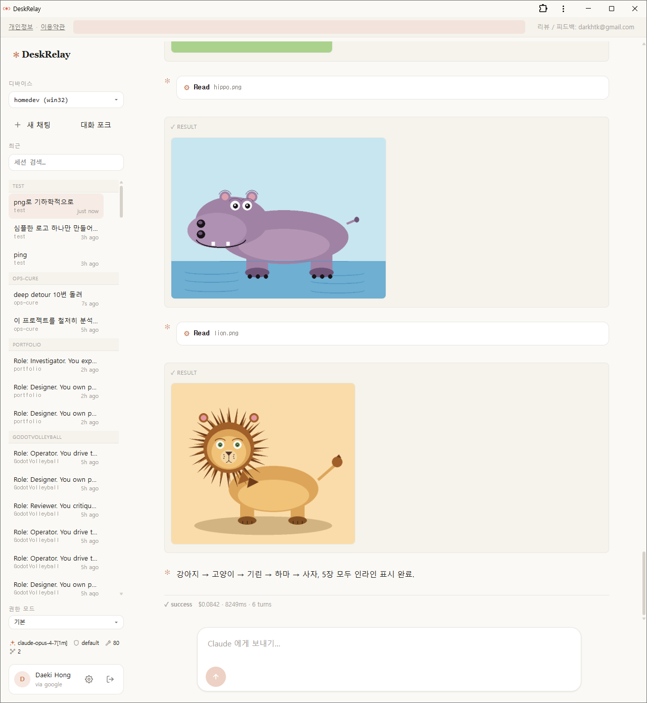
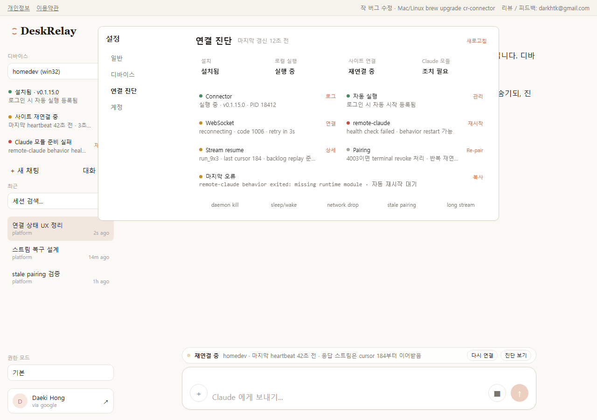
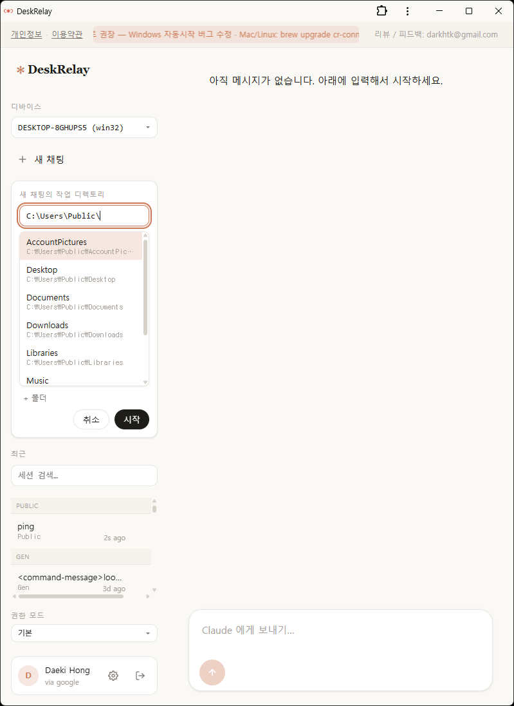
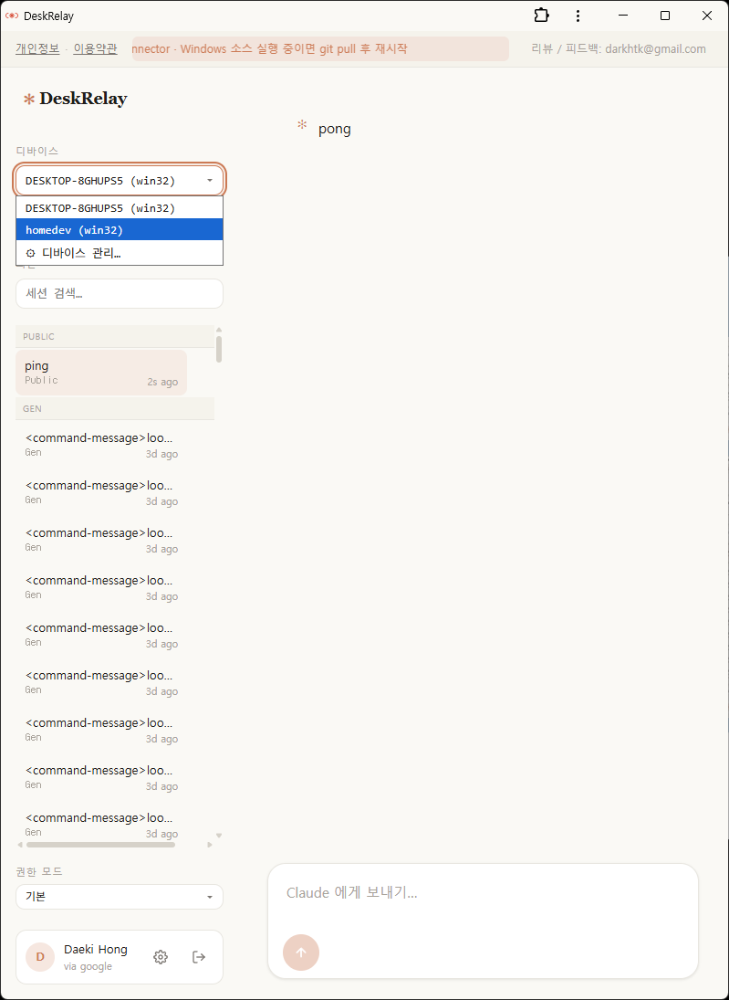
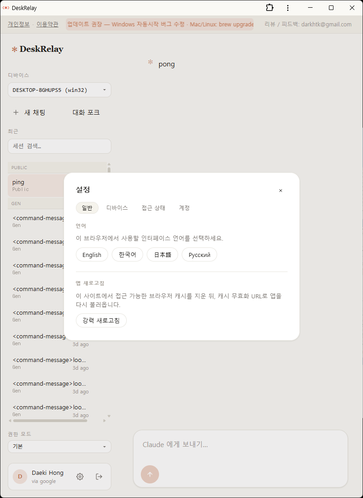

Visual Evidence 01
채팅 결과를 바로 확인하는 메인 화면
왼쪽 세션 목록, 상단 디바이스 선택, 중앙 결과 스트림, 하단 입력창이 한 화면에 들어갑니다. Claude Code 결과를 브라우저에서 바로 소비하는 제품 경험의 중심 화면입니다.
DeskRelay는 Claude Code를 로컬 개발자 도구에 머물게 두지 않고, 브라우저와 모바일에서 내 PC에 연결해 쓰는 원격 플랫폼으로 확장한 프로젝트입니다. 단순 원격 접속이 아니라 로그인, 디바이스 pairing, 연결 상태 진단, 배포 경로까지 포함한 제품 구조를 직접 설계하고 구현했습니다.

왼쪽 세션 목록, 상단 디바이스 선택, 중앙 결과 스트림, 하단 입력창이 한 화면에 들어갑니다. Claude Code 결과를 브라우저에서 바로 소비하는 제품 경험의 중심 화면입니다.

단순 채팅 UI가 아니라 connector 상태, websocket 연결, 세션 진단, 로그, reconnect 흐름까지 드러나는 운영 화면을 직접 설계했습니다. 문제 발생 시 무엇을 보여 주고 어떻게 복구시키는가가 먼저 보이도록 한 구성입니다.
Claude Code는 개인 PC에서 강하지만, 이동 중이거나 다른 기기에서 같은 흐름을 이어가기 어렵습니다.
웹 프론트엔드와 모바일 wrapper, Cloudflare 백엔드, 로컬 connector를 하나의 접속 모델로 묶었습니다.
pairing code, Google 로그인, 연결 상태 표시, 로그와 reconnect 흐름으로 운영 가능한 상태를 만들었습니다.
Orchestration이 내부 작업 규칙을 정리한 사례였다면, DeskRelay는 그 흐름을 외부 사용 가능한 플랫폼으로 민 사례입니다.
원격 AI 플랫폼은 모델 연결만으로 끝나지 않습니다. 새 세션을 어떤 디렉터리에서 시작하는지, 여러 PC를 어떻게 고르는지, 언어와 접근 상태를 어디서 관리하는지까지 제품 화면 안에서 설명되어야 합니다.

새 채팅을 열 때 어느 디렉터리에서 Claude Code를 시작할지 브라우저에서 직접 고를 수 있게 설계했습니다.

한 사용자가 여러 디바이스를 pair하고, 필요한 순간 다른 PC로 바로 전환하는 1:N 디바이스 모델을 UI에서 드러냅니다.

다국어 UI, 브라우저 캐시 제어, 접근 상태 같은 운영 요소를 별도 설정 화면에서 다루게 해 서비스 사용성을 높였습니다.
SolidJS SPA, 다국어 대응, 세션/연결 상태 UI
Cloudflare Workers, Hono, D1, KV, Durable Object
Bun 기반 PC daemon/CLI, pair 명령, 토큰 연결
MSIX, Homebrew, Android wrapper까지 고려한 배포 구조
이 프로젝트는 AI를 잘 안다는 주장보다, AI 기반 개발 흐름을 실제 제품과 운영 구조로 연결할 수 있다는 점을 보여 줍니다.
Unity, XR, 툴링, 로보틱스에서 해 왔던 일은 결국 복잡한 시스템을 구조화하고 운용 가능하게 만드는 일이었습니다. DeskRelay는 그 역량이 브라우저, 모바일, 백엔드, 로컬 connector, 배포 채널까지 넓어졌다는 증거에 가깝습니다.